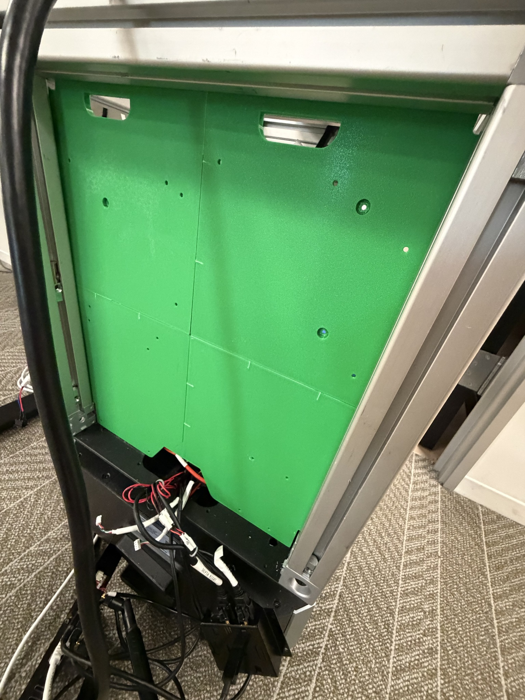
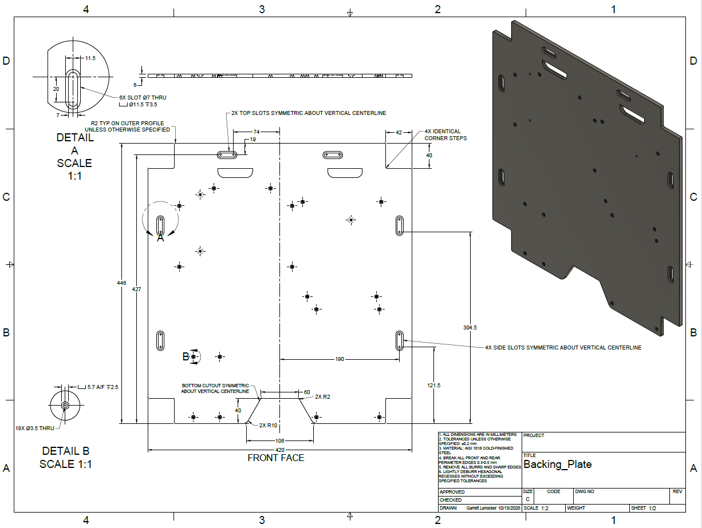
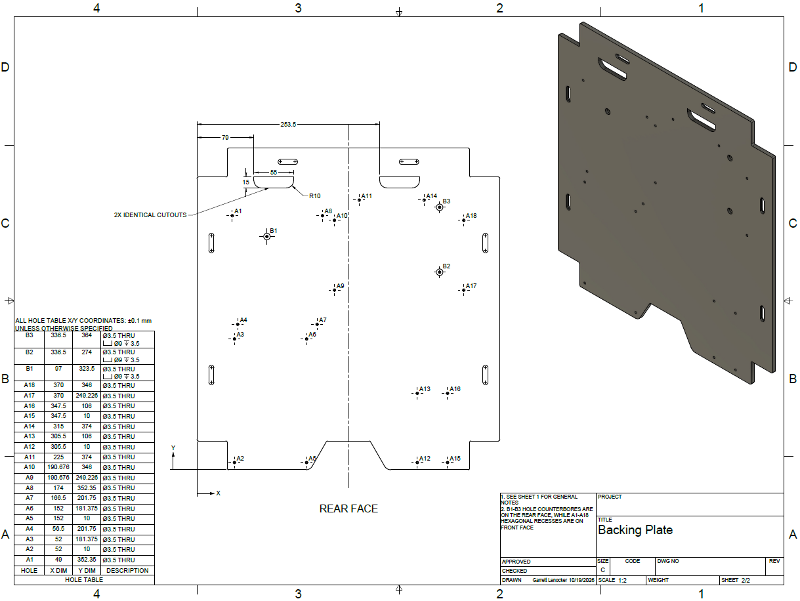

Kazvu Robot Backing Plate.
Designing a steel electronics-mounting plate that also contributes counterweight and packaging structure for a mobile robot.
Goal
Secure multiple electronics modules while using a steel plate to contribute counterbalance low in a mobile UR10e robot chassis.
How I approached it
Develop the component layout in Fusion 360, test fit with a 3D-printed ABS prototype, and produce front/rear CNC manufacturing drawings.
Result / status
Prototype and populated CAD assembly documented; manufacturing drawings completed. Installed steel-plate stability results are not documented.


Original project documentation including CAD screenshots, engineering drawings, and prototype photographs. Select an image to inspect it at full size.
Explore the full project gallery ↓One plate, two purposes.
The mobile robot needed a mounting surface for electronic boards, controllers, and related hardware. Because the UR10e creates a tipping moment, I also used the plate as an opportunity to add weight in a useful location rather than adding a separate counterweight.
Packaging and manufacturability.
The geometry had to fit between the chassis members while preserving access to fasteners, board standoffs, cables, and neighboring hardware. The 1018 cold-finished steel design also needed realistic machining details, dimensional tolerances, and clear front/rear feature definitions.
Iterate before ordering metal.
- 01
Arranged the electronics and mounting-hole pattern in Fusion 360 and refined the outline to meet chassis clearances.
- 02
Designed slots and captured bolt-head pockets, including hexagonal recesses to prevent fasteners from turning during assembly.
- 03
Produced an ABS fit-check prototype to inspect the plate envelope and mounting details in the physical chassis.
- 04
Prepared front- and rear-face manufacturing drawings with hole tables, tolerances, and deburring/edge-break notes for CNC machining.
Prototype and production drawings.
The project includes the actual ABS prototype, populated electronics assembly CAD view, and two engineering-drawing sheets. These demonstrate packaging and documentation work; counterweight effectiveness is a design objective, not a measured performance result in the material shown.
Design for the person assembling it.
Captive bolt-head recesses, service clearances, and the order of assembly affected the plate layout. The prototype reduced uncertainty about fit before investing in steel machining.
What I would validate next
Next: document the finished steel component and measure chassis stability with the plate installed.
Design, prototype, and iterate.
The images below document the development process from CAD and documentation to prototype hardware and integrated assemblies.

